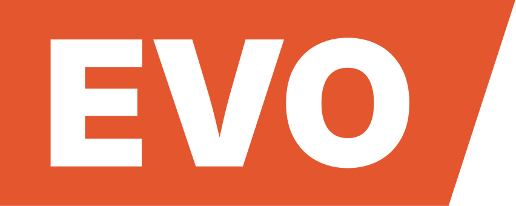

El proyecto llegó con lo más valioso ya decidido: un nombre con historia propia, una paleta oro sobre noche y una idea de negocio clara. Máquinas de coleccionables sellados, instaladas donde la gente ya está, con stock que cambia y se avisa. Detrás, un equipo que lideró Zmart Games por más de 20 años.
Lo que no estaba a la altura era la forma. El logo original resuelve la lectura, pero es un ave heráldica en dorado con tipografía de sistema: podría ser una marca de cerveza, de seguros o de joyería. No dice juego, no dice colección y no dice búsqueda.
Se mantienen el nombre y la paleta. Se rehace el logo y se construye un sistema que pueda vivir en una máquina, en una pantalla y en un feed sin perder carácter.
En la leyenda del norte, el alicanto es un ave que se alimenta de oro y plata, y quien la sigue de noche llega a la veta. Esa es la marca: la búsqueda es el botín. Lo entretenido no es el precio, es encontrar la máquina, ver qué hay esta semana y abrir la cápsula.
Japón lleva décadas resolviendo exactamente este negocio. Revisamos en terreno máquinas gashapon, muros de cápsulas y la señalética del metro, mirando cómo funcionan, no cómo se ven. Su estética saturada no viaja bien a Chile; su estructura sí.
El isotipo es la pieza más importante del sistema. Es el alicanto reducido a su forma más simple: cuerpo de pepita, alas abiertas, un penacho de tres rombos y un rombo que cae. Redondo y amable, para contrastar con un sistema que es angular.
El logotipo usa la misma tipografía display del sistema. El penacho del isotipo es, exactamente, la tilde de la Í de BOTÍN: la misma figura, a otra escala. DEL ALICANTO se distribuye al ancho de la palabra para que el bloque cierre como una sola pieza.
Regla de uso: el isotipo acompaña siempre al logotipo. El logotipo solo, sin el ave, no se usa. El isotipo solo sí, en espacios chicos como avatar, favicon o sello de máquina.
La mascota es el mismo alicanto en versión ilustrada, y es quien trae el juego a la marca. Vuela rápido, siempre cargado, y pierde tesoro por todas partes. Un buscador de tesoros simpático, con algo de pícaro.
Para que el personaje se mantenga igual en cada pieza nueva, se fijan cinco rasgos que no cambian:
La paleta original se respeta, con un ajuste: el fondo pasa de un negro azulado a un azul noche más luminoso, que deja respirar al oro y se siente menos serio. El verde mineral queda reservado para estados, como stock nuevo o máquina disponible.
La tipografía display es Chakra Petch: técnica, de esquinas cortadas, con algo de señalética de metro y de interfaz de anime. El texto corrido va en Bai Jamjuree, de la misma familia de diseño pero más cálida y legible. Ambas son libres y funcionan en web e impresión.
Dos formas ordenan todo el sistema y salen directamente de la historia.
Con ellas se arman las piezas que más se van a repetir. El mapa de vetas dibuja el rastro como una línea de metro. La ficha de veta traduce la ficha de serie japonesa: dónde está la máquina, qué colección tiene, cuántos modelos y cuál es el raro.
El sistema ya está aplicado en la página de lanzamiento de botin.cl. Abre con el alicanto volando sobre un rajo de noche hacia una máquina, presenta las cuatro categorías, explica cómo funciona y cierra con la frase del equipo de Zmart. El correo de contacto para distribuidores y ubicaciones está protegido contra spam.
La página está publicada en una dirección de prueba y oculta para buscadores. Pasa a botin.cl cuando esté aprobada.